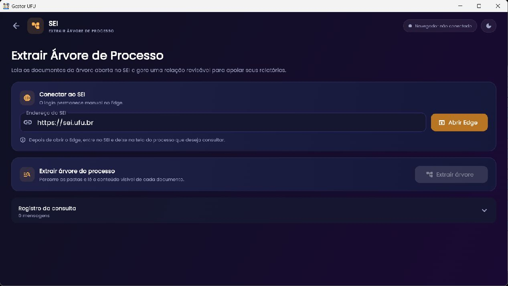

Processos e documentos
Extrair Árvore de Processo
Leia a árvore do processo que está aberta no SEI e gere uma relação revisável dos documentos visíveis, para copiar ou exportar como inventário.

Acessar o processo
- Confira o endereço SEI no campo; o padrão da UFU é
https://sei.ufu.br. - Selecione Abrir Edge. O login é manual e permanece no Edge.
- Faça login no SEI com sua conta e localize o processo autorizado.
- Abra a árvore do processo e mantenha essa tela visível.
- Volte ao Gestor e selecione Extrair árvore.
Não informe senha do SEI no Gestor. A leitura usa a interface aberta/autenticada do navegador. Acesso ao processo depende das permissões institucionais da sua conta.
Revisar, copiar e exportar
O registro da consulta mostra mensagens de andamento e total encontrado. Quando a extração termina, a tabela contém os campos do inventário identificados pela interface: nome na árvore, tipo/número, código SEI, data e resumo, além da posição/ordem. Revise a lista e compare com a árvore visível; itens colapsados, carregamento parcial ou documento não aberto podem limitar o conteúdo extraído.
No resultado, o cabeçalho informa “Documentos encontrados · N”. Copiar relatório copia o texto formatado; Exportar .txt grava o relatório. O relatório de texto é selecionável. A expansão Ver campos identificados por documento abre a tabela horizontal com as colunas ordem (#), Nome na árvore, Tipo/número, Código SEI, Data e Resumo. Se a tabela estiver mais larga que a janela, use a barra horizontal. O aviso informa que os campos foram inferidos do texto visível e devem ser revisados; uma consulta sem documentos exibe estado vazio. Copiar inventário não transfere os documentos nem muda o processo.
Diagnóstico
| Mensagem/situação | Ação sugerida |
|---|---|
| Botão Extrair árvore desabilitado | Abra o Edge pelo Gestor, entre manualmente no SEI e deixe a árvore do processo aberta. Confira a tela ativa e endereço. |
| Não encontrou documentos | Expanda/carregue a árvore no SEI antes de extrair; confira se o processo está selecionado e se a sessão não expirou. |
| Resumo ou datas incompletos | Compare com os documentos visíveis, reabra/expanda o item no SEI e faça nova leitura. |
| Processo não permitido | Solicite acesso pelo canal institucional apropriado; o Gestor não contorna permissões do SEI. |
O cartão “Inserir Documentos no SEI” do painel é um recurso separado, marcado “Em breve” e sem rota implementada nesta versão. Não confunda com a inserção de Plano de Ensino/Plano de Trabalho no SEI.
Relacionado: Planos de Ensino e Planos de Trabalho.